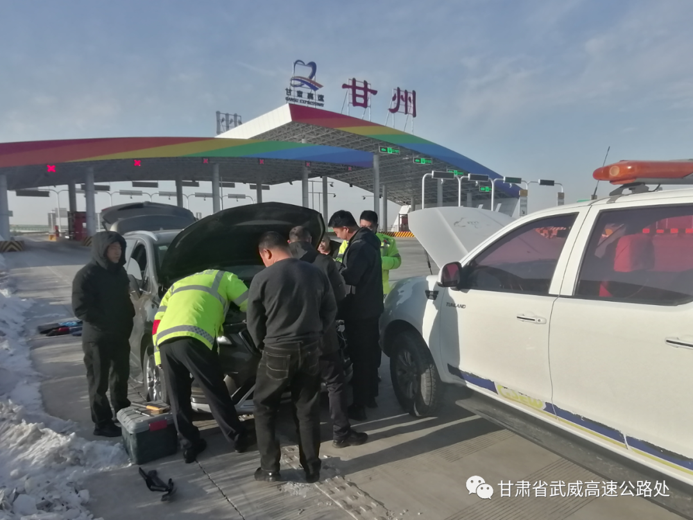

山临高速公路收费所概况
张掖，位于青藏高原和蒙古高原交汇的河西走廊中部，西汉以“张国臂掖，以通西域”而得名，历史上又称甘州。自古以来就是丝绸之路商贾重镇和咽喉要道，素有“塞上江南”“金张掖”之美誉。辖区土地总面积3.86万平方公里，辖甘州区、临泽县、高台县、山丹县、民乐县、肃南县一区五县，辖区有汉、裕固、藏、蒙、回等38个民族，其中分布于祁连山区的裕固族是全国独有的少数民族。2022年，全市常住人口112.01万人，城镇人口59.91万人，城镇化率53.49％。
境内祁连山水源涵养区、黑河绿洲、荒漠戈壁三大生态系统交错衔接，雪山冰川、森林草原、七彩丹霞、田畴沃野、湿地候鸟、荒漠沙丘等地貌交相辉映，使张掖成为坐落在祁连山、黑河湿地两个国家级自然保护区之上的城市，2019年成功创建为国家生态文明建设示范市。
【资源优势】
境内河流众多，阳光充足，土地肥沃，灌溉便利，是国家现代农业示范区，是全国最大的玉米制种区和重要的粮食、蔬菜、瓜果、油料和牛羊生产基地。也是全省以钨钼、铜、金、铁、煤、粘土、钾盐等矿种为主的金属、非金属矿产集中区和水能、光能、风能开发区。张掖既有“半城芦苇”的自然美景，也有“半城塔影”的历史风貌，文化沉积深厚，人文景观丰富，是国家级历史文化名城和中国优秀旅游城市。这里有中国最美之一的祁连山草原、张掖丹霞、黑河湿地、黑河峡谷和平山湖大峡谷，有全国最大的山丹马场、保存最完整的汉明长城、历史文化名山焉支山、名城骆驼城、红西路军战斗遗址和烈士陵园，有距城市最近的七一冰川、沙漠公园，有全国最大的室内泥塑卧佛张掖大佛、坐佛山丹大佛，有与敦煌莫高窟同时代的马蹄寺石窟群，还有独特的裕固族、蒙古族、藏族风情等。
【国民经济】
2022年，全市实现地区生产总值581.51亿元，比上年增长6.1％。其中，第一产业增加值170.33亿元，增长6.4％；第二产业增加值118.90亿元，增长8.0％；第三产业增加值292.29亿元，增长5.3％。三次产业结构比为29.3：20.4：50.3。完成十大生态产业增加值224.82亿元，占全市地区生产总值的38.7％，比重比上年提升1.2个百分点。工业增加值比上年增长7.1％，其中规模以上工业增加值增长9.0％。社会消费品零售总额245.33亿元，比上年增长7.3％。一般公共预算收入完成31.29亿元，比上年增长21.7％；一般公共预算支出194.75亿元，增长24.0％。
【农业生产】
2022年，全市粮食种植面积318.85万亩，比上年增加0.96万亩。油料种植面积19.55万亩，增加5.24万亩。蔬菜种植面积61.37万亩，增加5.13万亩。中药材种植面积24.19万亩，减少0.64万亩。果园面积11.30万亩，增加0．38万亩。粮食产量151.17万吨，比上年增长1.4％。其中，夏粮产量45.52万吨，增长3.2％；秋粮产量105．65万吨，增长0.6％。蔬菜产量194.25万吨，比上年增长9.5％。园林水果产量8.08万吨，增长9.6％。中药材产量10.28万吨，增长2.9％。肉类产量16.86万吨，比上年增长7.1％。牛奶产量19.24万吨，增长6.5％。年末牛存栏70.90万头，增长5.1％；牛出栏32.85万头，增长5.6％。羊存栏375.92万只，增长7.1％；羊出栏360.75万只，增长9.2％。生猪存栏52.97万头，增长4.1％；生猪出栏90.84万头，增长6.5％。
【项目建设】
2022年，全市固定资产投资比上年增长17.6％。按三次产业分，第一产业投资增长13.4％；第二产业投资增长128.9％，其中工业投资增长128.9％；第三产业投资下降18.1％。基础设施投资下降36.4％。民间投资增长21.4％。
全年项目投资比上年增长17.2％。其中，制造业投资增长32.1％，电力、热力、燃气及水生产和供应业投资增长215.8％，交通运输、仓储和邮政业投资下降28.9％，水利、环境和公共设施管理业投资下降38.3％。
全年房地产开发投资比上年增长20.2％，其中住宅投资增长48.2％。房屋施工面积481.51万平方米，增长12.6％，其中住宅施工面积342.31万平方米，增长22.0％。房屋竣工面积33.81万平方米，下降53.9％，其中住宅竣工面积30.93万平方米，下降22.5％。商品房销售面积94.35万平方米，下降15.6％，其中住宅销售面积87.58万平方米，增长1.0％。
【人民生活】
2022年，全市城镇新增就业2.01万人，城镇登记失业率为2．69％。全年输转城乡富余劳动力29.67万人，其中市外输转10.44万人，市内输转19.23万人。城镇居民人均可支配收入32366元，增长4.1％；农村居民人均可支配收入18854元，增长6.7％。城镇居民人均消费支出25177元，增长3.6％；农村居民人均消费支出16806元，增长6.0％。居民恩格尔系数（即居民家庭食品消费支出占家庭消费支出的比重）城镇为29.8％，农村为30.2％。
【社会保障】
2022年末，全市参加城镇职工基本养老保险人数21.66万人，参加城乡居民基本养老保险人数68.06万人，参加城镇职工基本医疗保险人数14.69万人，参加城乡居民基本医疗保险人数104.31万人，参加失业保险人数9.60万人，参加工伤保险人数12.87万人，其中参加工伤保险的农民工3.76万人。全年保险公司保费收入40.88亿元，支付各类赔款及给付11.93亿元。年末城市居民最低生活保障人数1.59万人，农村居民最低生活保障人数4.87万人。
【资源环境】
2022年，全市总用水量19．43亿立方米。其中，生活用水量0.55亿立方米；工业用水量0.17亿立方米；农业用水量16.93亿立方米；生态用水量1.77亿立方米。市内8个国家级、7个省级地表水考核断面中，达到或优于Ⅲ类水质标准的断面比例为100％。全年空气质量优良天数比例为89.3％，同比持平。城区交通主干道道路交通噪声状况好，噪声水平等级一级；区域环境噪声状况较好，噪声水平等级二级。全年平均气温为8℃，比上年偏高0.2℃。年日照小时数2848.1小时，比上年增加9.3小时。年降水量168.7毫米，比上年减少6.2毫米。
【社会事业】
2022年，全市登记市级科技成果16项，其中应用技术类成果13项。专利授权量1522件，下降32.5％，其中发明专利授权量66件，有效发明专利406件，每万人口发明专利拥有量3.6件。共签订技术合同439项，下降18.4％；技术合同成交金额38.54亿元，增长13.1％。
普通本专科招生0.71万人，在校生2.37万人，毕业生0.45万人。中等职业教育招生0.47万人，在校生1．26万人，毕业生0.35万人。普通高中招生0.78万人，在校生2.25万人，毕业生0.69万人。初中招生1.3万人，在校生3.8万人，毕业生1．32万人。普通小学招生1.1万人，在校生7．23万人，毕业生1．31万人。特殊教育招生21人，在校生191人。幼儿园在园幼儿4.02万人。
年末广播节目综合人口覆盖率99.93％，比上年末提高0.02个百分点；电视节目综合人口覆盖率99.94％，提高0.02个百分点。全市共有体育场地4985个，体育场地面积334.2万平方米。全年体育获得各类奖牌54枚，其中金牌19枚。全年接待国内游客1529.09万人次，比上年下降55.5％；国内旅游收入84.44亿元，下降56.0％。
年末共有医疗卫生机构1356个。其中医院46个，医院中综合医院21个，中医医院17个，专科医院8个；基层医疗卫生机构858个，其中，社区卫生服务中心（站）30个，卫生院82个，村卫生室746个；专业公共卫生机构20个，其中，疾病预防控制中心7个，妇幼保健院（所、站）7个，卫生监督所（中心）6个。年末卫生技术人员1.22万人，其中，执业医师和执业助理医师0．5万人，注册护士0.65万人。医疗卫生机构床位1.13万张，其中，医院0.85万张，卫生院0．21万张。
文献提供：S.
所党支部：聚力打造“三个阵地”激发行业活力
历史的洪流，在时序更替中奔腾。 发展的航船，在奋楫争先里前行。
用好学习教育“活阵地”、提升运营质效 山临所党支部严格落实职工“集中领学+班组辅导”的学习制度，注重构建“线下+线上”职工教育管理新模式，用好“月集中”“岗前学”“岗后练”等学习模式，依托钉钉APP全覆盖打造“身边课堂”，确保职工学习教育常态化开展。 坚守党建引领“主阵地”、激发行业内力 将收费站党小组作为基层党员、职工教育培训主阵地，围绕党的最新理论、上级文件精神、行业发展、基层党建、业务操作、政策法规等内容，教育引导广大党员、职工不断强化政治涵养、业务素质。充分利用“党建+”模式，结合行业发展、稽核打逃、超限治理、环境卫生整治等重点工作，大力开展“三抓三促+五学五提升+五精行动”等专项活动，增强高速收费运营内生力。
筑牢窗口服务“首阵地”、优化“满意高速” 以“三抓三促”行动和基层党建品牌创建为抓手，紧紧围绕“巩固阵地、增强功能、补齐短板、提升整体”，搭建起惠民便民、ETC办理、政策宣传、打逃治理等于一体的便民服务台，不断夯实基层党组织阵地的服务功能。 通过坚守党建引领“主阵地”，用好学习教育“活阵地”、筑牢窗口服务“首阵地”，“三个阵地”齐心发力，不断加强山临所党员、职工队伍建设，持续推动高速收费队伍的创造力、凝聚力、战斗力，为践行巩固“人民满意高速”、实现振兴甘肃高速公路事业飞跃发展提供坚强组织保障。
甘州收费站：兴办民事解民忧系列报道-高速服务暖人心
2023年12月21日16点10分左右，山临高速甘州站收费班长李春国在车道值守时，突然发现一辆小汽车驶出车道后在广场滞留，他便主动上前询问情况，司机告诉他是因为所驾驶的小汽车皮带脱落，熄火后再也没法启动。
了解情况后，当班班长李春国向站长王福涛反映情况，两人陪同司机一起对该车进行了再次检查，确定车辆无法启动后帮助司机维修车辆。在收费站工作人员帮助下，小汽车正常启动。司机握着王福涛和李春国的手说：“今天多亏你们的帮助，才让我这么快就把车修好了，真心感谢你们”。王福涛对司机说道：“为司机朋友们排忧解难是我们收费人员的服务宗旨，这都是我们应该做的。”
在今后的工作中，该站将继续做好窗口延伸服务，力所能及的为过往司乘人员排忧解难，用实际行动彰显优质高效的服务理念，让广大司乘人员感受到高速公路人带给他们的温暖，用真心和真情护航每一位司乘的平安回家路。
所稽查大队：“靶向施策”有效提高堵漏增收工作质效
今年以来，山临收费所瞄准稽核打逃靶向重点施策，全力提高堵漏增收工作质效。
补短板，优化稽核打逃管理机制。及时修订完善《稽核管理实施细则》，建立台账清单，梳理逃漏费类型，捋清稽核思路，积极构建规范化稽核管理体系，夯实稽核根基。定期开展稽核业务专项培训，组织职工系统学习打逃方法、典型案例，深入剖析问题根源，探讨分享经验，着力提升稽核业务专业化水平。
抓落实，探索稽核打逃新思路。加大“绿通”车辆跟踪反查与特情车辆现场稽查力度，对比分析可疑车辆的行驶轨迹、时长、流水等，做到精密筛查、精准锁定，对证据确凿车辆及时发起稽核工单并追缴其通行费。成立规范性自查工作小组，对已发起的所有部级稽核业务平台稽核工单进行全面自查，全力确保稽核工作落实到位、措施有效。
强效能，展现稽核打逃新风貌。定期召开稽核工作专题会议，认真分析研判可能存在的逃费形式，从车辆逃费过程、数据流水、门架信息、特情复核、工单发起处理等方面入手，找差距、补不足、列重点、找疑点，切实解决稽核打逃能力薄弱等问题。
强重内查，提升内部管控效力。采取现场稽查、夜间稽查、远程稽查、数据稽查相结合的方式，对各收费站工作纪律、文明服务、入口治超、收费业务等方面开展全面稽查，对查出的问题立即下发整改通知书，要求限期整改并上报具体措施，切实达到以查促提，以查促改的目的。。
所党支部：一单位一品牌、一支部一特色、一党小组一亮点”党建品牌创建深入开展
山临高速公路收费所山临高速公路收费所党支部党建品牌内涵：“党建领航抓收费、提升服务保畅通”。围绕推进收费运营服务保畅提质增效目标，各党小组扎实开展山临所“聚心擎帜”党支部品牌创建，以“一党员一盏灯”“一党员一阵地”“一支部一面旗”党建内涵的“三个一”细化落实工作，建成具有亮点突出、快捷便民、公开高效的收费运营保畅服务新模式。
通过深入开展创建党建品牌活动，依托“1+7+21+78”的党建工作平台，提升学思践悟能力水平。“1”：1个品牌核心，即以党建引领高速运营；“7”：7个特色党小组；“21”：21块党建文化宣传阵地，阵地包括党建文化墙、党员活动室、楼道文化走廊；“78”：78名党员，包含“巾帼文明岗”“党员先锋岗”“青年突击队”，让“红色能量”持续充盈，激励全所广大党员干部职工以更加昂扬的姿态奋进新征程、建功新时代。
通过党建领航收费，稳步推进收费运营保畅服务提质增效目标，通过“聚心擎帜”党支部品牌创建，加快培育、建成具有亮点突出、快捷便民、公开高效的收费运营保畅服务新模式，为山临高速公路高质量运营发展持续供应“新鲜血液”。
开展主题教育，通过思想引领筑牢支部党建的本色。党支部把党员思想教育列为中心内容，贯穿于全年业务工作的始终。通过组织开展一系列思想意识形态的教育活动，保持党员同志的纯洁党性，筑牢共产党员的品质本色。
开展学习培训，通过能力提高擦亮支部党建的底色。党支部以学习型组织生活为基础。制定年度学习计划及内容，确定每月相对固定时间，开展学习活动的内容主要围绕党支部年度工作总体部署及收费运营各项重点工作，做到计划具体、内容详细，提交支委会讨论通过后实施。在理论学习方面：结合每月开展“三会一课”、“主题党日活动”及支部集中学习等形式，组织全体党员学习习近平新时代中国特色社会主义思想理论及上级党组织的会议、文件精神，组织党员干部职工深学细悟习近平新时代中国特色社会主义思想围绕新时代坚持和发展什么样的中国特色社会主义、怎样坚持和发展中国特色社会主义，建设什么样的社会主义现代化强国、怎样建设社会主义现代化强国，建设什么样的长期执政的马克思主义政党、怎样建设长期执政的马克思主义政党等重大时代课题，提出的一系列原创性治国理政新思想新战略，深入学习领会党的二十届一中、二中全会精神。坚持把学习贯彻不断向交通运输领域拓展深化，结合工作实际重点学习领会习近平新时代中国特色社会主义经济思想、习近平法治思想、习近平生态文明思想，以及习近平总书记关于党和国家工作，特别是关于交通运输重要论述，深刻领会习近平新时代中国特色社会主义思想蕴含的坚定信仰信念、鲜明人民立场、强烈历史担当、求真务实作风、勇于创新精神和科学方法论，把握其鲜明的继承性、创新性、时代性、指导性，切实增强政治认同、思想认同、情感认同，切实增强学习贯彻的自觉性和坚定性。组织党员干部职工观看红色电影、警示教育片《1921》《建党伟业》《浴血誓言》《叩问初心》等活动。通过观影，党员干部更直观的感受到“没有共产党就没有新中国”这几个字的分量，进一步体会到共产党员为坚持马克思主义、始终为民族解放和人民幸福前赴后继、英勇奋斗的奉献和牺牲。全体党员纷纷表示，要继承和发扬革命精神，时刻牢记初心使命，坚定不移跟党走，以更加求真务实的态度，以更加积极饱满的精神投入到工作中，以实际行动诠释共产党员的使命与担当，切实把主题教育学习成果转化为推动工作的强大动力，发挥先锋模范作用，为群众办好事、解难事、办实事。
开展目标承诺，通过业务融合提升支部党建的成色。围绕“党员亮身份，工作亮标准，服务亮承诺”的总体目标，通过服务对象来改进工作作风，提升工作效能。结合今年开展的习近平新时代中国特色社会主义思想主题教育，深入学习领会习近平新时代中国特色社会主义思想的内涵实质，毫不动摇坚持党对高速收费工作的绝对领导，做到对党绝对忠诚。一是始终牢记“三个务必”，坚决贯彻执行中央八项规定及其实施细则精神，把严的主基调长期坚持下去。积极推进党务政务财务公开，坚持无禁区、全覆盖、零容忍，完善“三不”一体推进制度机制，持续营造风清气正的干事创业环境。加强党员队伍建设，一是从严从实强化日常教育管理监督，激励广大党员当标兵、做先锋，让党旗在运营收费各个“阵地”高高飘扬。二是始终把政治标准放在首位，树立鲜明正确的用人导向，选拔使用一批政治过硬、业务精湛、业绩突出、敢于担当、作风优良的干部。三是着力强化党建工作责任，主动适应新形势党建工作要求，全面提升党支部、党小组组织力。聚焦人民群众出行便利需要、对准现实工作中诉求的问题（ETC办理、绿色通道减免、差异化收费、车道保畅、特殊天气便民服务、应急救援、延伸服务导游路线指引等）改进提升基层党建工作，扎实开展基层党建工作示范创建，推动党组织引领作用的充分发挥，将党建工作与业务工作结合起来。组织开展党员落实公开承诺和兑现承诺活动，使支部党建服务于收费运营工作“中心”、服务于党员群众“人心”，推动支部党建品牌影响力，助力全所各项工作持续向好发展。
建立完善政治理论学习第一议题制度。 把习近平新时代中国特色社会主义思想和创新理论学习，作为党员干部教育培训的中心内容和首要任务，完善支部会议政治理论学习第一议题制度，切实学好用好“学习强国”“甘肃党建”学习平台,以学促能,以能促用。
开展系列活动，扎实做好学习贯彻二十大精神有关工作。 组织党员干部带头学、认真学、扎实学，先学一步、深学一层，围绕党的二十大报告原文和报告解读等学习资料，深入体会大会的精彩内容和丰富内涵，积极撰写心得体会、理论文章，将党的二十大精神落实到工作部署中。组织党员干部开展专题学习讨论，领导干部讲授专题党课，组织开展二十大学习竞赛活动。
瞄准从严治党推进廉政建设。 不断完善相关制度，加强对贯彻落实“两个维护”及中心党委决策情况的督促落实，建立实施跟进督办制度，建立党建联系制度，推动开诚齐抓共管、搞笑协调、整体推进的党建工作格局，紧紧围绕贯彻新发展理念，提高单位发展质效，加强日常监督和专项检查，督促党员干部切实履行好职责使命。
把党建工作融入到收费所发展治理发展各个环节，坚持把党建工作融入到具体工作中，对标对表找准方向，找出方法，提高领悟力展开学习讨论，把问题弄清，一条一条吃透，一项一项推进；分类建立清单台账，把严找准融合关系，将“三抓三促”行动和各项任务落实见效。把安全、运营、管理、效率作为抓手，一体化推进，做到一盘棋布局、一张图谋划、一个调发声，让提升管理落实全拓展、全覆盖。
所党支部：主题教育润“心”细无声
为深入学习贯彻习近平新时代中国特色社会主义思想主题教育，进一步提升党员身份意识和责任意识，山临所大力开展党员“亮身份、表承诺、树形象、做表率”活动，引导激励广大党员“亮”出身份，关键时刻“站”出来，服务形象“树”起来，用实际行动展现“主题教育”成果。
亮出党员身份 争先锋 做表率 以点带面
走进山临收费所无论是办公区域、还是车道保畅一线，一块块印有鲜红党旗的“党员先锋岗”和“党员责任区”牌板格外引人注目。今年以来，所党支部结合收费运营实际，将各党小组党建与收费运营工作深度融合，在办公室、车道票亭地点设立“党员先锋岗”“党员责任区”，不断强化党员在党意识，使党员身份“亮”出来、党性意识“唤”起来、先锋形象“树”起来，进一步带领收费一线班组立足本职、苦练技能、争先创优，不断创造服务价值，提升服务本领。
“党员示范岗和党员责任区的创建，就是要把党员的先进性岗位化、职责化，把先锋承诺‘提出来’，岗位职责‘亮出来’，用实际行动践行全心全意为人民群众便利出行服务，用实际行动诠释“一党员一盏灯”、“一党员一阵地”“一支部一面旗”的模范引领作用。”山临所党支部书记郑忠介绍。
所党支部持续深化党员为职工办实事，定期收集职工意见建议、解决职工实际困难、化解职工矛盾纠纷，通过与职工面对面沟通、心贴心交流，摸排统计职工家庭情况，把职工的“心愿清单”变成“幸福账单”，进一步凝聚党员为职工办实事的强大合力。
做出党员承诺 查安全 保畅通 争做标杆
在上岗班前会上，党员带头宣誓：“人物双防、车道安全靠自己！严守规矩，应征不漏，应免不收，用心服务司乘，确保车道畅通……” 山临所坚持“关键少数”带动“绝大多数”，设立党员安全示范岗，签订安全承诺书，公开接受职工监督，引导广大党员自觉做安全工作的“监督员”。通过创建党员安全责任区、党员安全示范岗，定期组织党员开展收费车道现场安全隐患自查活动，以党员带全员，常查安全隐患，常纠违章行为，有效杜绝各类安全生产事故的发生，夯实车道安全生产根基。不断强化班组安全自主管理，实行网格化管理模式，对区域划片包干，构建起个人、责任区、班组三级巡查制度，组织班组党员、职工“一对一”结对子，相互对责任区车道机电设备运行、指挥棒、肩闪、对讲机、正规操作等情况进行交叉互检，对互检发现的安全隐患，进行及时整改，进一步提高收费运营安全管理水平。
树起党员形象 肩扛担 我先干 牢记使命
“火车跑得快，全靠车头带。集体强不强，全靠领头羊。” 山临所践行“收费运营出题、党建工作破题”的工作思路，围绕收费运营工作中的“舒心、畅通、追缴、免费”等工作核心，常态化开展技术比武、业务竞赛等活动，结合工作难题开展党员创新攻关，亮出党员形象，强化党员实战锻炼，确保广大党员个个成为独当一面的“行家里手”。 巩固深化党的二十大精神学习教育成效，党员带头引领职工开展学习习近平新时代中国特色社会主义思想主题教育热潮，带头重温红色党史，带头诵读红色书籍，进一步强思想、聚人心、促发展，让每一名职工在工作岗位上将党的政策深度融合到日常工作中，认真践行新时代党的建设总要求，切实把党的政治优势、组织优势转化为高质量发展的优势，发扬自我革命精神，为高速公路运营事业发展提供坚强保证。 聚焦人民群众出行便利需要、对准现实工作中诉求的问题ETC办理、绿色通道减免、差异化收费、车道保畅、特殊天气便民服务、应急救援、延伸服务导游路线指引等，全所党员争当标兵、勇做先锋，让党旗在运营收费各个“阵地”高高飘扬，充分发挥党员的先锋模范作用，积极践行亮身份、表承诺、树形象、做表率行动，叫响“我先上”“跟我上”，擦亮了共产党员这块“金字招牌”。